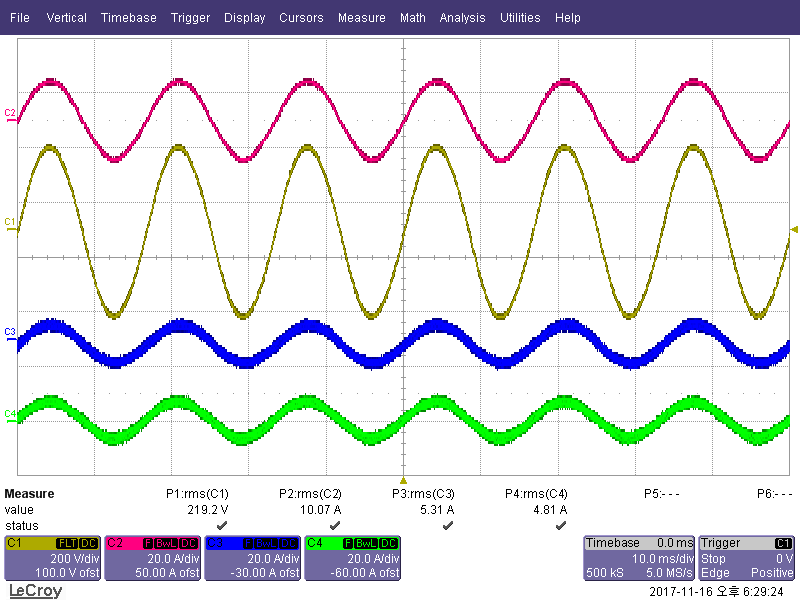
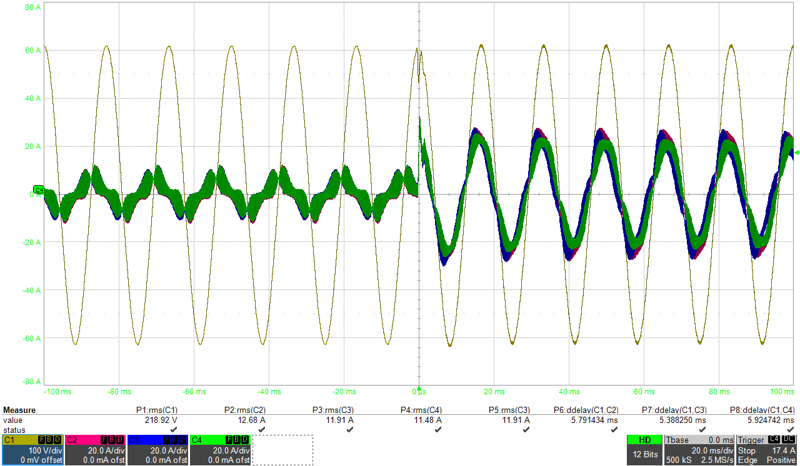
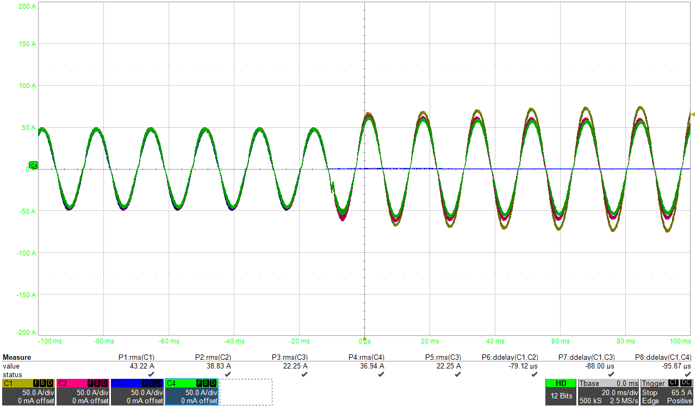

01 / Uninterruptible Power Supply
UPS
UPS 인버터의 출력전압 제어와 병렬운전 제어, 그리고 그 시험을 맡았던 기록입니다.
시스템 아키텍처
계통 입력AC
→
정류부AC → DC
→
DC Link에너지 버퍼
→
인버터DC → AC
→
중요 부하Critical Load
배터리DC Link 충·방전
Bypass 경로: UPS 내부 이상 또는 과부하 상황에서 계통 전원을 정적 스위치를 통해 부하로 전달하는 별도 경로입니다.
제품 참고 이미지

무정전 전력 공급
정상 상태에서는 정류부와 인버터가 부하에 교류 전력을 공급합니다. 계통이 끊기면 배터리가 DC Link를 받치고, 인버터는 출력을 그대로 이어 갑니다.
UPS 방식
| 방식 | 정상 운전 | 정전·전원 품질 이상 시 | 주 용도 |
|---|---|---|---|
| 스탠바이 (Standby · 흔히 오프라인) | 계통 전력이 부하로 전달되고, 인버터는 대기합니다. | 정전 또는 큰 전압 강하를 감지하면 배터리·인버터 경로로 전환합니다. | 비중요 부하, 단순 백업 전원 |
| 라인 인터랙티브 (Line-interactive) | 계통 전력을 기본으로 사용하면서 전압 조정 기능으로 저전압·과전압을 보정합니다. | 전압 변동은 가능한 한 배터리를 사용하지 않고 조정하고, 정전 시에는 배터리 경로로 전환합니다. | 전원 변동은 있지만 상시 이중 변환까지는 필요 없는 서버·네트워크 장비 |
| 온라인 (Double-conversion) | 입력 AC를 DC로 변환한 뒤 다시 AC로 만들어, 부하에는 인버터 출력이 계속 공급됩니다. | 배터리가 DC Link를 유지하므로 배터리 운전으로의 전환 시간이 없습니다. | 전원 품질에 민감하거나 끊김이 허용되지 않는 중요 부하 |
시험에서 본 것
출력 품질
선형·비선형·불평형 부하와 부하 급변에서 출력전압 처짐과 회복 시간.
에너지 전환
정전 감지 → 배터리 운전 → 복전 후 재충전·정상 경로 복귀 순서.
가용성
병렬 전류 분담 편차, 정적 바이패스 절체, 운전 중 모듈 투입·분리 때 출력 연속성.
업무
- 3레벨 인버터 출력전압 제어: 인덕터 전류 / 커패시터 전류 피드백을 비교하고, 부하전류 전향 보상을 넣어 부하 급변 시 전압 처짐을 줄였습니다.
- 병렬운전: ALS·3C 전류 분담 방식을 비교하고, PWM carrier 동기와 전압 지령 위상 동기로 고주파·저주파 순환전류를 나눠 잡았습니다.
- 부하 변동, 정전·복전, 배터리 운전, 바이패스 절체를 시험 조건별로 나눠 상태 전이와 복귀 조건을 점검했습니다.
- 이상이 생기면 결선 → 센서 → 게이트 구동 → 통신 → 제어 순으로 범위를 좁혀 원인을 찾았습니다.
시험 캡처

2대 병렬, 모듈 전류 5.31 A / 4.81 A (평균 대비 약 ±5 %).

0 ms 투입 후 분담 전류 약 ±10 A → ±25 A, 출력전압 진폭 유지.

운전 중 C3 모듈 분리, 남은 세 모듈이 부하 전류를 이어받음.
시스템도는 일반적인 이중 변환 UPS 구성입니다. 회로도, 제어 파라미터, 고객·제품 정보는 싣지 않았습니다. 제어 설계 과정은 병렬운전 기록과 출력전압 제어 기록에 있습니다.